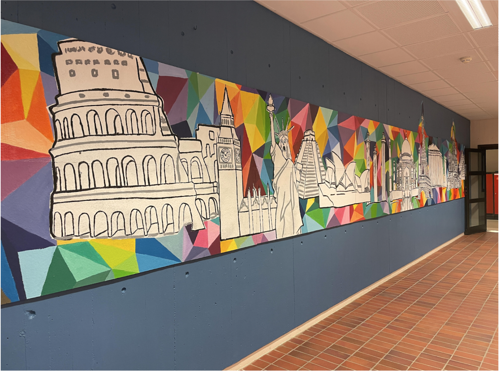

ISS make-over
Students choose areas of the school that they would like to make more interesting / beautiful. Projects are usually done in small groups. We generate ideas and do research / sketching in order to play with the idea to understand how and if it will work for the intended space. This idea is then carried out.
Grades: 9,10,11,12
Time: After school depending on when the students are available
Location: HS art room
Supervisor: jsvihus@isstavanger.no
